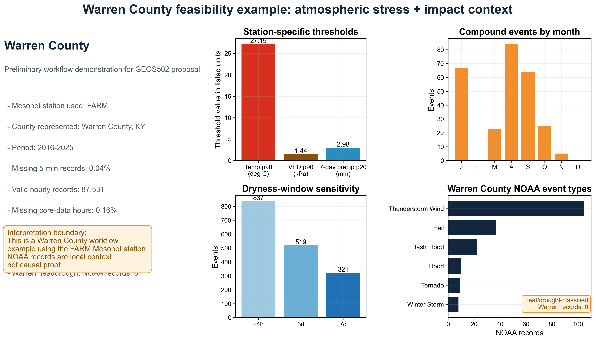
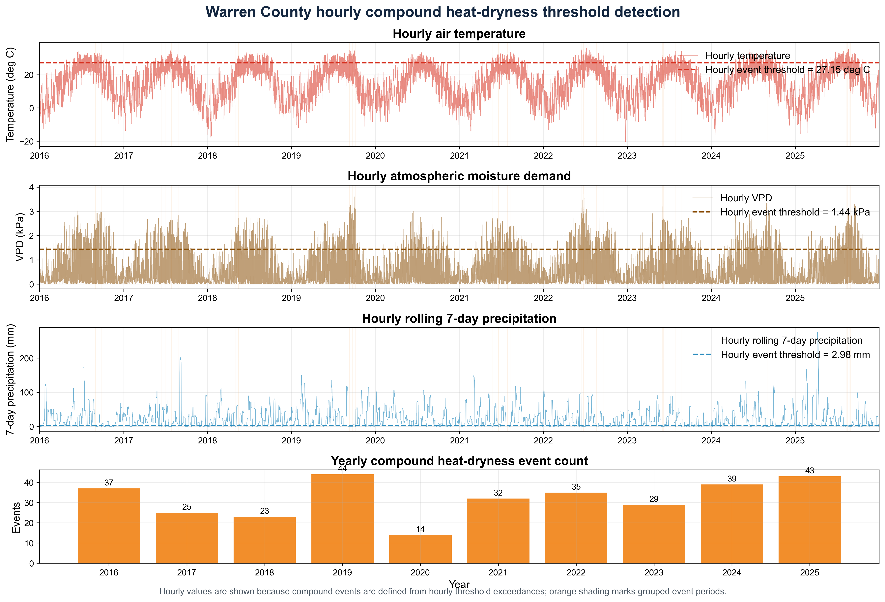
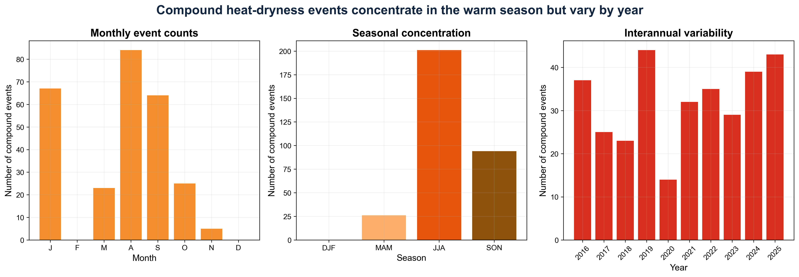
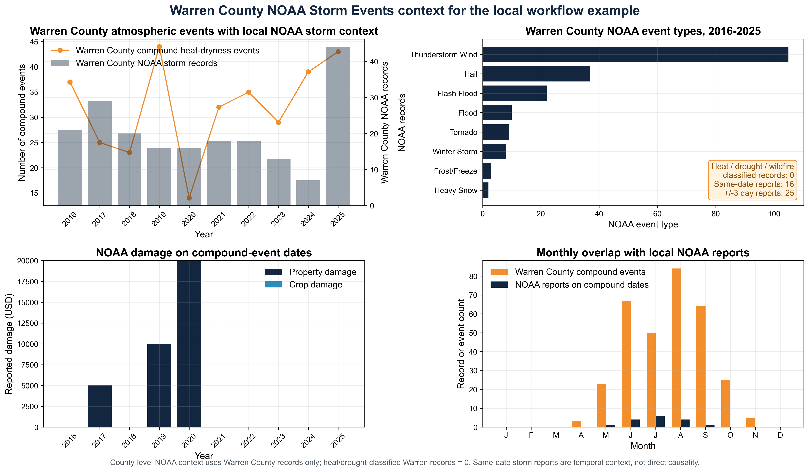

Project Summary
This project extends my extreme-weather portfolio from single-hazard climatology into compound climate risk. The workflow standardizes hourly station observations, derives vapor pressure deficit, calculates rolling precipitation windows, identifies percentile-based compound events, and compares event timing with NOAA heat and drought impact records. The pilot analysis used FARM station data from 2016-2025 and provides a template for expanding to the full Kentucky Mesonet network.
1. Scientific Motivation
Heat stress and short-term dryness are often studied separately, but their impacts are most damaging when they overlap. High temperature, high atmospheric moisture demand, and limited recent precipitation can rapidly increase agricultural stress, public health risk, fire-weather concern, and water-resource pressure. This project builds a practical workflow for identifying those overlapping conditions from high-frequency station observations.

Study context dashboard summarizing the station-based framework, hazard motivation, and Kentucky heat-dryness impact setting.
2. Detection Framework
The workflow uses a percentile-based definition so that compound events are evaluated relative to local station climatology. The pilot configuration flags hours when temperature and vapor pressure deficit exceed their 90th percentiles while rolling precipitation is below the 20th percentile. Sensitivity tests compare 24-hour, 3-day, and 7-day precipitation windows.

Workflow from hourly observations through QC, derived VPD, event detection, sensitivity testing, and impact comparison.

Hourly temperature, VPD, and precipitation thresholds with compound-event periods highlighted for the pilot station.
3. Pilot Results
Event sensitivity: the 24-hour window identifies 837 events, the 3-day window identifies 519, and the 7-day window identifies 321 main compound events.
Data quality: the FARM pilot station provided 87,531 hourly records across 2016-2025 with only 0.16% missing core observations.
Thresholds: the pilot station 90th-percentile temperature threshold was 27.153 C, 90th-percentile VPD was 1.435 kPa, and 7-day precipitation 20th percentile was 2.980 mm.

Event seasonality and interannual variability, highlighting warm-season concentration and year-to-year differences.

Duration and intensity diagnostics used to distinguish short-lived stress periods from longer, more severe compound episodes.

NOAA impact context connects station-detected heat-dryness stress periods with reported heat and drought impacts, supporting broader disaster-risk interpretation.
4. Why It Belongs in My Research Portfolio
The project connects atmospheric diagnostics with decision-relevant impacts, which is the same thread running through my CLIMBS thesis, WRF flood simulation, and Kentucky precipitation frequency work. It also shows my Spring 2026 growth in climate data science: reproducible workflows, physical feature engineering, threshold sensitivity analysis, and risk communication.